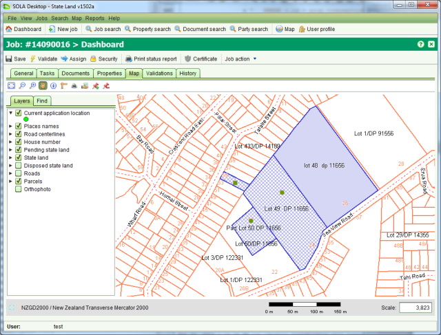

You can indicate the approximate location of an job using the Map points tab of Job Details
and the Locate Job tool You can indicate the approximate location of an job using
the Map points tab of Job Details and the Locate Job tool.
You can indicate the approximate location of an job using
the Map points tab of Job Details and the Locate Job tool.

Job Details Map Points tab
The Job Location Remove tool can be used to remove all location points that have been added to the job.